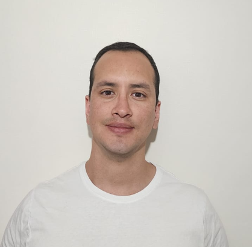

Senior Data & Analytics Engineer
Systems-oriented Data Engineer designing scalable analytical infrastructure for operational environments.
24h operational reporting collapsed to 15 minutes. LATAM Airlines.
SAS → BigQuery migration. 5 legacy silos decommissioned. Clínica Alemana.
End-to-end automation. 99.9% accuracy sustained. Claro Chile.
Healthcare, aviation & telecom. Always shipping. Always observable.
Operational ambiguity costs organisations more than slow pipelines.
The problem is rarely the data — it's the distance between data and decision.
10+ years across regulated industries. Remote-capable and shipping from day one.
Clinical reporting ran on legacy SAS infrastructure — fragmented across departments, with no lineage, no observability, and no path to real-time decision-making.
Led end-to-end migration to BigQuery with dbt-modelled semantic layer and automated CI/CD via GitHub Actions. Medallion architecture: raw → staging → marts. Tests on every mart before go-live.
85% reduction in query processing time. 5 legacy silos decommissioned. Real-time clinical analytics enabled for the first time. Deployed across Chile remotely.
Network disruptions at LATAM required live operational data. A 24-hour batch pipeline meant that every disruption response was based on yesterday's picture.
12M events/day from Jira and flight-ops systems · 5 countries · 40+ downstream dashboards · 120+ daily operational users.
Replaced the batch process with event-driven streaming on Pub/Sub + Dataflow + BigQuery. Exactly-once guarantees via Dataflow deduplication. Schema contracts enforced by Protobuf at ingestion; breaking changes blocked by CI.
Latency: 24h → 15 minutes. Network operations now steers live during disruptions instead of running next-day post-mortems. Distributed delivery across Chile, Brazil and Peru — async model throughout.
Data sources across the company had no formal documentation — access procedures, schemas, and ownership were tribal knowledge. New analysts needed weeks to become productive.
Created a comprehensive data source catalog covering every production data asset: user guides, access procedures, schema documentation, and source-to-report lineage maps.
Reduced information search time significantly across all analyst and BI users. The catalog became the standard onboarding resource for new hires joining the data team.
5M+ postpaid subscribers analyzed across billing cycles, commercial channels, payment methods, and geographic regions. Wireline + wireless product lines.
Diagnosed and fixed a RUT-K parsing bug in the AWK/sed notification pipeline that silently excluded ~24% of accounts. Rebuilt the extraction logic across 5 notification channels (IVR, SMS, APP, MAIL, WSP). Built risk quadrant scatter plots segmenting 16 regions by arrears rate vs. client volume — wireline and wireless separately.
Notification coverage: 76% → 99%. ~460K accounts recovered per billing cycle. Executive dashboards delivered to management with KPI tracking for suspension rates, notification reach, and commercial channel performance.
Rebuilt churn prediction model and underlying feature pipeline on multi-TB subscriber datasets using PySpark + Snowflake. Self-serve analytics dashboard deployed to commercial teams.
15% model accuracy improvement. 40% reduction in query operating cost. Churn interventions shifted from reactive to predictive.
Designed and operated end-to-end pipelines handling multi-TB network performance datasets. Automated manual reporting workflows across 8 business units. Introduced Kafka-based streaming for real-time network alerting.
40% elimination of manual effort. 99.9% data accuracy sustained. First real-time alerting infrastructure at the company.
A system that's fast but unobservable is a system that fails quietly.
Observability is organisational clarity — not an engineering luxury.
Engineering philosophy shaped by 10+ years in regulated, high-stakes environments.
Reducing operational ambiguity
through observable data systems.
The best data infrastructure is the kind organisations stop thinking about — because it just works, it's trusted, and it unblocks decisions instead of creating them.
That requires deliberate architecture choices, not just fast pipelines.
Query cost and compute spend shape every design decision alongside latency and reliability. I've reduced operating costs by 40%+ without touching accuracy — because those trade-offs were planned, not patched.
Data quality checks, lineage, SLA alerting — these aren't backlog items. They're the definition of done. A system you can't observe is a system you can't trust under pressure.
LATAM needed 15-minute latency for live operations — that justified streaming complexity. Batch is cheaper, more resilient, and usually right. The architecture should follow the decision, not the engineer's preference.
When a metric means the same thing to every team and every dashboard, organisations stop arguing about data and start using it. dbt transforms are business logic codified and tested — not just SQL.
Migrations succeed when you understand what the old system got right. SAS and Oracle pipelines exist because they worked. Carrying forward what was trusted — while retiring what was fragile — is the real engineering challenge.
Every engineering decision is also a governance decision.
The systems below were designed with that constraint in view.
Architecture decisions, trade-offs, constraints, and outcomes — not dashboards.
End-to-end analytics platform for LATAM's AI customer service chatbot across 5 countries. 11 interactive charts tracking MAU evolution, error taxonomy, NPS satisfaction, and channel adoption from launch through scale.
Metadata-driven ingestion engine that replaced 320+ hardcoded PL/SQL procedures with a single JSON-native pipeline on BigQuery. CDC-aware, idempotent, and self-rebuilding — the schema is data, not code.
Bridging 6 distributed systems — BSCS, DWH, HSS, ICC, SYMSOFT, PCRF — to detect billing-vs-network subscriber discrepancies across 4.5M active lines.
Weekly churn intelligence across BAM mobile + Fiber home. Cohort heatmaps, CAP-exhaustion correlation, and an A/B campaign that halved churn.
Three monthly controls — data (≥50 GB), voice and SMS (300+ destinations) — with per-operator cost modelling across Claro, Movistar and Entel interconnection rates. Fraud HOOK flags and test-line exclusions built into the query output.
Auditing legacy AWK/sed scripts uncovered a RUT parsing failure that silently excluded 24% of accounts from billing notifications across 5 channels.
Transforming flat percentage grids into scatter-plot risk matrices. Wireline vs Wireless segmentation across 16 regions with the 0.00% data quality catch.
Legacy SAS infrastructure fragmented across departments — no lineage, no observability. Phased migration to BigQuery with dbt marts and CI/CD via GitHub Actions.
10+ years operating across distributed teams. Async-first from day one.
Decisions, trade-offs, and pipeline behaviour live in docs and PR descriptions. Not in someone's head, and not in a meeting that happened while you were asleep. Written communication is how distributed teams build shared understanding across time zones.
Clear weekly commitments, visible progress, and a status update before anyone has to ask. Remote work fails when expectations are implicit. I make mine explicit from week one.
Loom walkthroughs over screen-share calls. Detailed PRs over scheduled reviews. Meetings reserved for what genuinely requires them. My calendar is not the bottleneck in your delivery schedule.
Pipelines deploy on PR merge. Tests run before anything reaches production. My timezone doesn't affect your deployment schedule — the system handles it.
Daily working language for 10+ years — technical and stakeholder-facing, written and spoken. Stand-ups, architecture docs, incident post-mortems, executive readouts.
Anchored at Santiago, Chile (UTC-3) · 9:00–18:00 window
Flexible on schedule — often start earlier for EU overlap, extend late for US West deep-collab. Australia / APAC: async-first with written handoffs, Loom walkthroughs, and PR-driven reviews. ~1–2h sync available on request.
Hiring across borders has two parts: can we do it legally,
and is this person a good bet for the team.
Legal pathways, life context. Logistics handled before the offer letter.
Hiring legally is solved territory across all three regions. References on the official pathways available on request.

I'm not looking for a six-month gig. I'm looking for a place to build a chapter — with my partner and our dog Rocky alongside.
The portfolio above is the work I do when I'm settled — that's the version I'd bring to your team.
"Streaming vs. batch is never just a tech decision —
it's an organisational decision in disguise."